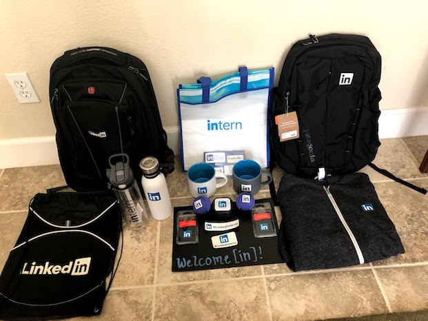

Software Engineering Internship @ LinkedIn
September 20, 2019
Table of Contents
Introduction
LinkedIn is the world's largest professional network with nearly 660+ million users in more than 200 countries and territories worldwide. LinkedIn is headquartered in Sunnyvale, CA, and was founded in 2002 with the vision to create economic opportunity for every member of the global workforce, and the mission to connect the world's professionals to make them more productive and successful. In December 2016, LinkedIn was acquired by Microsoft.
In Summer 2019, I interned as a Software Engineer at LinkedIn in Sunnyvale, CA. The internship lasted 12 weeks and there were around 300-400 interns just at the Sunnyvale location. LinkedIn pays interns very competitively with the other top tech companies (e.g. Yelp, Facebook, Google) and provided free housing to interns in Sunnyvale. LinkedIn is an incredible company with amazing culture; very friendly and helpful coworkers; one of the top cafeterias out of all tech companies; fun events; and great perks/benefits. By far my favorite internship.
What I worked on
During my twelve week internship, I worked backend for the Profiles & Identity Team. I had the incredible opportunity to work on the Search Appearances feature, which generates "weekly search statistics" for each user consisting of: (1) the number of times they appeared in search, (2) where their searchers work (i.e. their company, or school), (3) what the searchers do (i.e. their occupation), and (4) keywords used in the search (e.g. software engineer, student, etc.). This was a great opportunity as the Search Appearances feature is something that I am very familiar with, which made it very cool to get to work on it.
Not only did I get to work on a feature I was interested in, but I also got to work with technologies that I had just been reading about in university and wanted to get to experiment with: stream processing infrastructure. At my last internship at Yelp, I got to work with some batch processing applications, so this was excellent experience for me to round out the other main type of Big Data processing. For a quick description: batch processing is processing that happens on large chunks of data that is stored for some period of time (e.g. processing a week's worth of transactions once a week). Hadoop's MapReduce is one of the best frameworks for processing batch data. On the other hand, stream processing allows for the processing of data in real-time as they arrive (e.g. classifying fraudulent banking transactions as they occur). Stream processing allows for a large number of applications to take place that couldn't have occurred with batch processing as data is processed as it arrives in the system, as opposed to storing it for a day (or week), and then processing it later on. Popular stream processing frameworks include: Apache Flink, Apache Storm, Apache Samza, etc.
My project involved building a real-time data streaming application for the Search Appearances feature using Apache Samza, which is a stream processing framework (developed at LinkedIn); Apache Beam, a data model that can process both batch and stream processing jobs that run on any execution engine; and Apache Kafka, the popular distributed streaming platform that can act as a pub/sub system and processes a stream of records (also developed at LinkedIn). I don't want to get into all the details, but my project was incredibly interesting; and I got to work with very relevant and important technologies and concepts. The LinkedIn codebase is incredibly clean and concise, and documentation is tremendous, which made the technical side of the internship an absolute amazing experience.
Internship Events
As opposed to my Yelp internship (which had intern events 1-2 times per week), my LinkedIn internship featured far fewer events. This was simply due to the sheer volume of interns (i.e. ~400 at LinkedIn vs. <40 at Yelp). The big internship event of the summer was our trip to Disneyland, in which all the interns took a shuttle down to LA one Friday night; spent all of Saturday in Disneyland; and then shuttled back Sunday morning. A list of some of the events can be seen below:
- Intern Orientation -- Included this as an event because this was by far the best intern orientation that I have had out of my various internships. We got to enjoy buffet-style breakfast; tour the campus; and played several ice-breaker games to get to know each other better
- Intern-Mentor Day -- Interns and mentors got to attend a Compassion/Mindfulness seminar together, which was a neat opportunity to get to better bond with your mentor as well as learn about better mindfulness practices.
- CEO Jeff Weiner Intern Q/A -- All of the interns got the chance to listen to a talk given by LinkedIn's CEO, as well as a Q/A session
- LinkedIn Speaker Series, Andre Iguodala -- The greatest event of the summer was the chance to listen to Golden State Warriors Forward Andre Iguodala interviewed by Jeff Weiner regarding his new book: 'The Sixth Man: A Memoir'. I had to line up 2 hours in advance (and just barely made it in), but for those that made it in, we got a free book and got to listen to Andre in person. Additionally, those that waited in line after his talk, got a picture with him and a signed copy of the book.
- Disneyland -- The big intern event of the summer was a trip to Disneyland (at a time when the Star Wars world was just released). This was an incredibly fun trip where we got a fancy breakfast in the Disney hotel; and got to spend a full day in the park.
- Team Offsite -- Every quarter, most teams go on an offsite (which could consist of anything from going out to a restaurant, watching a movie, or going paintballing). A popular offsite at LinkedIn is to go to a cool Bocce Ball restaurant: Campo di Bocce in Los Gatos, where we got dinner and got to play some games of Bocce Ball.

Perks
From world-class cafeterias to competitve compensation to fitness centers, LinkedIn has some of the best perks/benefits out of all the tech companies in Silicon Valley. Below are some of the highlights of getting to work at LinkedIn:
- Swag -- Before my internship even started, LinkedIn mailed me a welcome package consisting of a LinkedIn crew shirt, LinkedIn hydroflask water bottle, as well as some other small LinkedIn items. In addition, halfway through the internship, we got to put together a swag package for our families that consisted of really cool LinkedIn-branded items (e.g. cutting board, coasters, clothing, etc.). Lastly, like other big tech companies, LinkedIn has a swag shop where employees can purchase LinkedIn-branded items (from clothes to work supplies, etc.).
- Cafeterias -- LinkedIn is known for having some of the best food in Silicon Valley. Honestly, I was skeptical at first, but having eaten at several tech companies (Google, LinkedIn, Facebook, Uber), I can say that LinkedIn does indeed have world-class food. There are three main cafeterias where employees are served breakfast, lunch, and dinner, as well as various coffee bars throughout the campus.
- Fitness Centers -- LinkedIn has three fitness centers consisting of state-of-the-art workout equipment and cardio machines, as well as a full basketball court.
- Micro Kitchens -- All big tech companies have similar microkitchens that feature coffee machines, snacks, drinks, lounge areas, etc.; but nonetheless, LinkedIn's microkitchens are very nice and help keep employees productive.
- InDay -- Each month, LinkedIn gives employees a day to focus on themselves, the company, and the world, in which employees get to work on anything from hackathon projects; work on their actual projects; play board games, etc. InDay focuses on a different theme each month (e.g. giving back, relationships, learning, wellness, etc.) and helps foster a collaborative and exciting culture to work for.
- Culture -- To me the most important perk of getting to work at LinkedIn is the incredible culture that exists there. I have interned at a number of companies, and while I have enjoyed all my other internships, I have not experienced a culture as friendly, helpful, and compassionate as the one cultivated at LinkedIn. One of LinkedIn's building blocks is that of compassion, and was fostered by CEO Jeff Weiner from way back in the company's history. I have seen at other companies, ideas and concepts brought up, and often times lightly practiced. However, at LinkedIn compassion is actively exercised, where it is readily apparent just how compassionate and friendly other employees are. Culture is definitely something I consider when looking for an employer (and I know a lot of people do as well), and the culture established at LinkedIn can only be found at a handful of companies.

Campus
LinkedIn is headquartered in Sunnyvale, CA, but there are offices all over the world (with other offices in San Francisco, New York, etc.). The Sunnyvale campus consists of three main sets of buildings, each with a fitness center, a main cafeteria, and every workplace has a nearby microkitchen. It takes about a 5-10 minute walk to get between buildings, but each building has a number of bicycles to make transit easier.
Final Thoughts
I have interned at a number of tech companies, but LinkedIn was by far my favorite internship. The LinkedIn campus is beautiful and the food was incredible. Additionally, the housing provided was amazing and was only a five minute commute (with shuttles picking us up right in front of our apartment on the way to work, and picking us up on campus to take us back to our apartment). Moreover, I got to work on a phenomenal project with an awesome team under a great mentor and manager. I highly recommend interning at LinkedIn if you want to work for an extraordinary company and work on exciting projects (and no, I wasn't paid to say that).